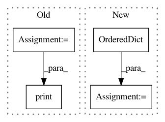

7c977cb5f370d2e8a8ceda762f8d22a3c668e8f0,fileinfo.py,,,#,20
Before Change
line = f.readline()
t_char += len(line)
while line:
count += 1
line = f.readline()
t_char += len(line)
except FileNotFoundError as e:
print(e)
sys.exit()
file_stats = os.stat(file_name)
// create a dictionary to hold file info
file_info = {
"fname": file_name,
"fsize": file_stats[stat.ST_SIZE],
"f_lm": time.strftime("%d/%m/%Y %I:%M:%S %p",
time.localtime(file_stats[stat.ST_MTIME])),
"f_la": time.strftime("%d/%m/%Y %I:%M:%S %p",
time.localtime(file_stats[stat.ST_ATIME])),
"f_ct": time.strftime("%d/%m/%Y %I:%M:%S %p",
time.localtime(file_stats[stat.ST_CTIME])),
"no_of_lines": count,
"t_char": t_char
}
print("\nfile name =", file_info["fname"])
print("file size =", file_info["fsize"], "bytes")
print("last modified =", file_info["f_lm"])
print("last accessed =", file_info["f_la"])
print("creation time =", file_info["f_ct"])
print("Total number of lines are =", file_info["no_of_lines"])
After Change
"st_mtime (last modification time),"
"st_ctime (time of creation Windows)")
stats_keys = stats_strings.split(",")
for key, value in OrderedDict(zip(stats_keys, file_stats)).items():
print(key, " =", value)
In pattern: SUPERPATTERN
Frequency: 3
Non-data size: 4
Instances
Project Name: geekcomputers/Python
Commit Name: 7c977cb5f370d2e8a8ceda762f8d22a3c668e8f0
Time: 2020-03-22
Author: alopex4@163.com
File Name: fileinfo.py
Class Name:
Method Name:
Project Name: akkana/scripts
Commit Name: 1c5022cf24af600351183513af494366f96652ec
Time: 2018-10-15
Author: akkana@shallowsky.com
File Name: phonewords.py
Class Name:
Method Name: find_dups
Project Name: mynlp/ccg2lambda
Commit Name: 8b3d695480f727e9c6095f10482346944999f582
Time: 2017-05-31
Author: pascual@nii.ac.jp
File Name: scripts/abduction_tools.py
Class Name:
Method Name: try_abduction